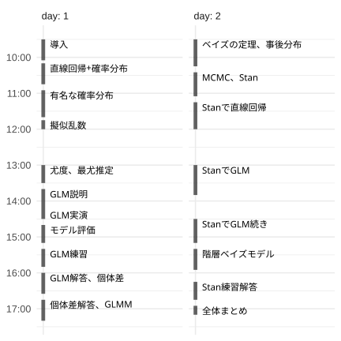

統計モデリング概論 DSHC 2026
- 講師: 岩嵜航 (東北大学生命科学研究科)
- 日程: 2026 {09-02, 09-09} 09:30–17:30
- 場所: オンライン
- 資料: https://heavywatal.github.io/slides/dshc2026/

実行環境の準備
DSHC参加者は他の講義と同じ Google Cloud Platform (GCP) 環境を使う。
下記のリンクから演習資料をダウンロードし、自分の作業フォルダに保存しておく。
preparation.ipynb が実行できることを確認しておくとなお安心。
Google Colab でもローカル環境でも実行できる。 手元のmacOSに講義用の仮想環境を用意する一例 (Colabに合わせて 3.12 を指定してあるが、最新版 ≥3.14 でも大丈夫なはず):
WORKON_HOME=${HOME}/.virtualenvs
uv_python=3.12
uv python install $uv_python
uv venv -p $uv_python ${WORKON_HOME}/dshc2026
source ${WORKON_HOME}/dshc2026/bin/activate
uv pip install -U jupyterlab seaborn statsmodels cmdstanpy 'arviz==0.23.4' ipywidgets
jupyter lab preparation.ipynb
演習資料
- Colab向けipynbファイル置き場: https://drive.google.com/drive/folders/1UFvhWaoW_DpNQxcsiS-x4gfQmPc_PRgX?usp=sharing
- ローカル環境向け・予備 (中身は上のと同じ)
講義資料
リンク先では←→キーで戻る・進む。
- 2026-09-02 09:30 | 導入
- 2026-09-02 10:30 | 直線回帰、確率分布、擬似乱数生成
- 2026-09-02 13:00 | 尤度、最尤推定
- 2026-09-02 14:00 | 一般化線形モデル(GLM)
- 2026-09-02 16:00 | 個体差、一般化線形混合モデル(GLMM)
- 2026-09-09 09:30 | ベイズの定理、事後分布、MCMC
- 2026-09-09 13:00 | StanでGLM
- 2026-09-09 15:00 | 階層ベイズモデル(HBM)